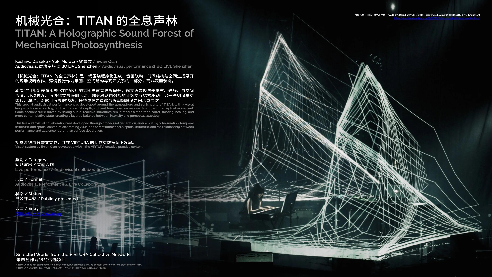

围绕音乐结构构建实时视觉系统，将舞台预演、音频分析、画面调度和现场控制连接为一套可运行的演出工作流。视觉参数随声音密度和段落变化，同时保留手动控制与稳定播放路径。A realtime visual system shaped around the music, connecting stage previsualisation, audio analysis, visual sequencing and live control in one show workflow. Visual parameters respond to density and structure in the sound, with manual control and a stable playback path retained throughout the performance.
现场记录呈现音乐人、实时视觉与舞台空间之间的关系，并保留正式活动海报信息。On-site documentation shows the relationship between performers, realtime visuals and the stage environment, alongside the official event poster.



音乐驱动，现场可控。Responsive to music. Controlled on stage.
音频分析控制粒子密度、运动速度和画面能量，手动调度负责段落进入、视觉层级和关键转场。舞台预演提前校验构图与屏幕比例，现场监看与备用播放路径确保演出持续运行。Audio analysis drives particle density, motion and visual intensity, while manual cues control entrances, hierarchy and key transitions. Stage previsualisation verifies composition and screen proportions in advance; live monitoring and a fallback playback route support continuous operation during the show.
- 项目标题Title
- 机械光合：TITAN 的全息声林TITAN: A Holographic Sound Forest
- 艺术家Artists
- KASHIWA Daisuke × Yuki Murata × Ewan QianKASHIWA Daisuke × Yuki Murata × Ewan Qian
- 场地与日期Venue + Date
- BO LIVE 前海店，深圳 · 2025.10.21BO LIVE Qianhai, Shenzhen · 21 Oct 2025
- Ewan QianEwan Qian
- 视觉艺术家 / 现场视觉制作Visual Artist / Live Visual Production
- VIRTURA 职责VIRTURA Role
- 实时视觉系统、舞台预演、音频分析、现场播控与技术支持Realtime visual systems, stage previsualisation, audio analysis, live show control and technical support